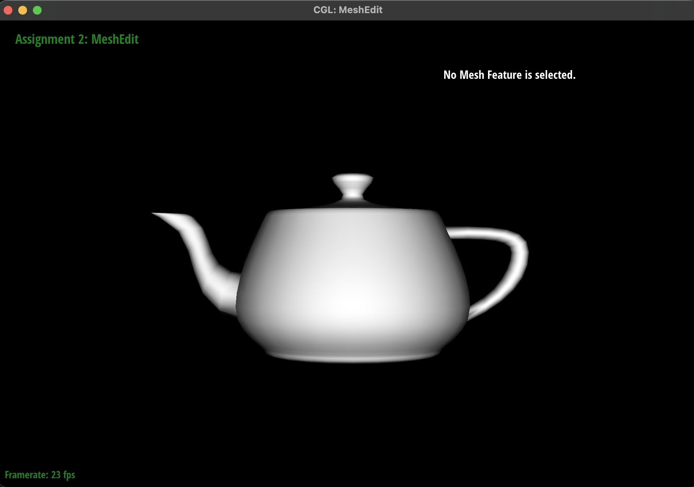

The area-weighted vertex normal was computed by iterating over the faces incident to the vertex by accessing information stored in the half-edge data structure. Per the half edge traversal method presented in class, the iteration begins at one outgoing half-edge and continues to travel to neighboring triangles using h = h->twin()->next() until getting back to the starting half edge. For each non-boundary face, the face normal was computed by taking the cross product of two edge vectors of the triangle. The vectors for all the incident faces were accumulated and normalized in order to obtain a unit vertex normal to be used for Phong shading.
